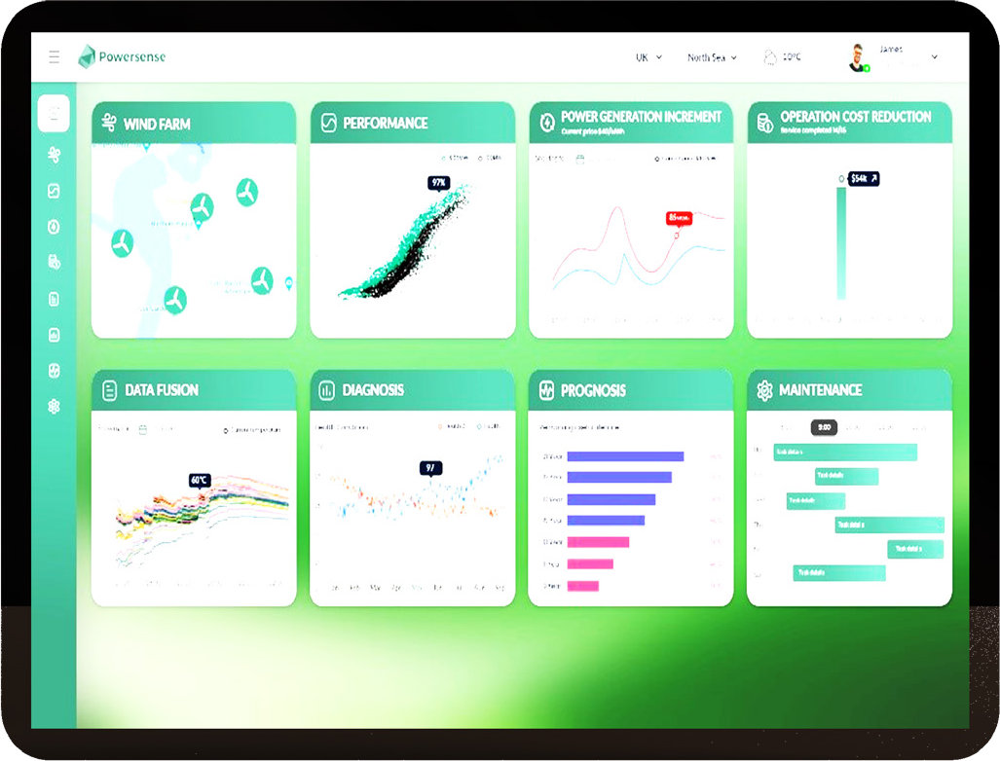

Data Fusion
- Software platform in the cloud
- Raw data streaming and processing
- Seamless deployment into existing systems
The Platform
PowerSense runs in the cloud and deploys seamlessly into the control desks operators already use. It turns the raw signals from existing sensors into health conditions, fault predictions, lifetime estimates and an optimal maintenance plan.
First product
Our first product targets wind, where the O&M need is most urgent: availability of offshore equipment is only 95%, and downtime costs the industry billions each year.

Modules
Each module feeds the next — from raw data streaming all the way to an optimised maintenance schedule.
Benefits
Know the operating condition and health state of every asset in real time, so the whole system runs safely, stably and efficiently.
An AI solution that integrates into existing monitoring systems with no additional sensing hardware to buy or install.
Prevent unplanned shutdowns, identify potential faults and fix problems quickly to reduce downtime and lost production.
Proactive, predictive maintenance saves on logistics, labour and parts — the costs that dominate today’s O&M budgets.
Plans generated automatically around equipment health, dynamic inventory, weather forecasts and electricity price.
Manage equipment health in real time, prevent catastrophic failures and extend the useful life of critical assets.
In the control room
Product design, test conditions, performance, reliability, power generation, maintenance costs, fault diagnosis and the maintenance plan — live, in one view.

Roadmap
The same maintenance methodology and machine-learning library extend across the renewable energy ecosystem — toward a universal intelligent O&M platform.
Establish the company and release our first product targeting offshore wind, proven through demonstration and trial projects with lead customers.
Extend the software to more equipment types and scale intelligent O&M across wind and smart grids.
Expand to solar, EV, ocean and storage — establishing PowerSense as the de facto O&M standard for renewable energy.
Plans
Annual SaaS subscription based on the rated capacity of your sites. In our validation, customer savings were around 100 times the subscription fee.
Fixed price / 6–12 months
The usual starting point: a trial project on a small wind farm, with a 50% discount on the full product for the trial period.
$100 / MW / year
Visibility first: streaming, processing and performance analysis.
$300 / MW / year
Fault detection and location with expert support behind it.
$500 / MW / year
The full platform: predict, plan and extend asset life.
Indicative pricing from our standard SaaS model; discounts apply when only some modules are required. Every engagement starts with a conversation about your fleet — talk to us for a tailored proposal.